21 \(\chi^2\) 検定と相関分析
2つの変数の間に関係があるかどうかをどう判断するか？
・\(\chi^2\) 検定、相関係数、相関分析
・クロス集計表での独立性の検定、相関係数、エクセルのデータ分析機能「相関」を用いた分析
21.1 カイ二乗（\(\chi^2\)）検定
クロス集計表に分類されるような質的データ（連続していないデータ）について、分類基準の間に関連があるかどうかを検定します（割合の違いに意味があるのかを調べます）。独立性の検定ともいいます。
具体例
「猫が好きかどうか」を、ある標本の男女に聞き取りを行ったところ、以下のような結果が得られました。母集団における「猫好き」の割合は、男女で違いがあるでしょうか。
| 好き | 好きではない | 合計 | |
|---|---|---|---|
| 男性 | 24 | 26 | 50 |
| 女性 | 28 | 22 | 50 |
| 合計 | 52 | 48 | 100 |
21.2 実測値と期待値（理論値）
\(\chi^2\) 検定では、実際に得られた値（実測値）と、「性別と猫好きかどうかに関係がない」としたときに期待される値（期待値、理論値）を比べます。
例1
もし性別と猫好きかどうかに関係がなければ、「好き」の52人は、男性と女性に全体の人数の割合（男性50%、女性50%）で分かれるはずです。
\[ \text{男性で「好き」の期待値} = \text{「好き」の人数} \times \text{男性の割合} = 52 \times \frac{50}{100} = 26 \]
実測値
| 好き | 好きではない | 合計 | |
|---|---|---|---|
| 男性 | 24 | 26 | 50 |
| 女性 | 28 | 22 | 50 |
| 合計 | 52 | 48 | 100 |
期待値（理論値）
| 好き | 好きではない | 合計 | |
|---|---|---|---|
| 男性 | 26 | 24 | 50 |
| 女性 | 26 | 24 | 50 |
| 合計 | 52 | 48 | 100 |
例2
男女の人数が異なる場合も、同じ考え方で期待値を計算できます。男性の割合は \(\dfrac{30}{80} = 0.375\)、女性の割合は \(\dfrac{50}{80} = 0.625\) です。
\[ \text{男性で「好き」の期待値} = \text{「好き」の人数} \times \text{男性の割合} = 42 \times \frac{30}{80} = 15.75 \]
実測値
| 好き | 好きではない | 合計 | |
|---|---|---|---|
| 男性 | 14 | 16 | 30 |
| 女性 | 28 | 22 | 50 |
| 合計 | 42 | 38 | 80 |
期待値（理論値）
| 好き | 好きではない | 合計 | |
|---|---|---|---|
| 男性 | 15.75 | 14.25 | 30 |
| 女性 | 26.25 | 23.75 | 50 |
| 合計 | 42 | 38 | 80 |
一般に、各セルの期待値は次の式で求められます。
\[ \text{期待値} = \frac{\text{そのセルの行の合計} \times \text{そのセルの列の合計}}{\text{全体の合計}} \]
21.3 \(\chi^2\) 検定の手順
前回までに学んだ仮説検定の手順に沿って、\(\chi^2\) 検定を行います。
手順1：仮説を設定する
- 帰無仮説（\(H_0\)）：性別と、猫が好きかどうかは関連しない（2つの変数は独立である）
- 対立仮説（\(H_1\)）：性別と、猫が好きかどうかは関連する（2つの変数は独立ではない）
手順2：有意水準（臨界値）を決める
有意水準は5%とします。
手順3：検定統計量 \(\chi^2\) を求める
\(\chi^2\) 検定では、「実測値」と「期待値」のズレが、誤差の範囲といえるのか、それとも確率的にあり得ないズレなのか（有意な差なのか）を検定します。次の統計量は、以下の自由度のカイ二乗分布に従います。
\[ \chi^2 = \sum \frac{(\text{実測値} - \text{期待値})^2}{\text{期待値}} \]
ここで、\(\sum\) は、クロス集計表のすべてのセルについて合計することを表します（2行2列の表なら4つのセルの合計です）。
- 自由度
- （1つ目の変数のカテゴリーの数 \(-\) 1）\(\times\)（2つ目の変数のカテゴリーの数 \(-\) 1）
- つまり、（クロス集計表の行の数 \(-\) 1）\(\times\)（クロス集計表の列の数 \(-\) 1）
- 今回の例では、\((2 - 1) \times (2 - 1) = 1\) です。
実測値と期待値のズレが大きいほど、\(\chi^2\) の値は大きくなります。そのため、\(\chi^2\) 検定では、分布の右側（値が大きい側）だけに棄却域を置きます。
21.4 カイ二乗分布
カイ二乗分布は、自由度によって形が変わります。自由度と \(\chi^2\) の値を変えて、分布の形、臨界値（有意水準5%）、P値がどう変わるかを確かめてみましょう。初期値は、例1の \(\chi^2 = 0.641\)（自由度1）です。
オレンジの部分の面積がP値、黒の点線が有意水準5%の臨界値です。カイ二乗分布についての詳しい説明は、カイ二乗分布（統計学の時間）も参考にしてください。
21.5 \(\chi^2\) 検定の計算と結論
手順4：検定統計量と臨界値を比較する 手順5：検定の結論を出す
例1
\[ \begin{aligned} \chi^2 &= \frac{(24 - 26)^2}{26} + \frac{(26 - 24)^2}{24} + \frac{(28 - 26)^2}{26} + \frac{(22 - 24)^2}{24} \\ &= 0.154 + 0.167 + 0.154 + 0.167 \\ &= 0.641 \end{aligned} \]
- 自由度1、有意水準5%の臨界値：3.841
- P値：0.423
- \(\chi^2 = 0.641\) は臨界値3.841より小さく、P値0.423は有意水準0.05より大きいので、帰無仮説は棄却されません。
- 結論：「性別と猫が好きかどうかに関連があるとはいえない（有意水準5%）」となります。
例2
\[ \begin{aligned} \chi^2 &= \frac{(14 - 15.75)^2}{15.75} + \frac{(16 - 14.25)^2}{14.25} + \frac{(28 - 26.25)^2}{26.25} + \frac{(22 - 23.75)^2}{23.75} \\ &= 0.194 + 0.215 + 0.117 + 0.129 \\ &= 0.655 \end{aligned} \]
- 自由度1、有意水準5%の臨界値：3.841
- P値：0.418
- \(\chi^2 = 0.655\) は臨界値3.841より小さく、P値0.418は有意水準0.05より大きいので、帰無仮説は棄却されません。
- 結論：「性別と猫が好きかどうかに関連があるとはいえない（有意水準5%）」となります。
Note\(\chi^2\) 検定を使うときの注意
- 期待値が小さいセル（目安として5未満）があると、\(\chi^2\) の値がカイ二乗分布にうまく従わず、検定の結果が正確でなくなります。その場合は、カテゴリーをまとめる、標本を増やす、別の検定（フィッシャーの正確確率検定など）を使う、といった対応が必要です。
- \(\chi^2\) 検定は、実測値（人数などの度数）を使って計算します。割合（%）のまま計算してはいけません。
- 統計ソフトによっては、2行2列の表のときに「イェーツの補正」という調整を自動で行うため、エクセルの結果と少し異なる値が出ることがあります。
21.6 エクセルでの \(\chi^2\) 検定
例1のデータを、次のようにエクセルに入力したとします。
| A | B | C | D | |
|---|---|---|---|---|
| 2 | 好き | 好きではない | 合計 | |
| 3 | 男性 | 24 | 26 | =SUM(B3:C3) |
| 4 | 女性 | 28 | 22 | =SUM(B4:C4) |
| 5 | 合計 | =SUM(B3:B4) |
=SUM(C3:C4) |
=SUM(D3:D4) |
期待値の表を作る
別の場所（F3〜G4）に期待値の表を作ります。F3セルに次の式を入力し、F3〜G4にコピーします（「行の合計 × 列の合計 ÷ 全体の合計」を計算しています）。
=$D3*B$5/$D$5関数で計算する
| 求めるもの | エクセルの式 | 結果 |
|---|---|---|
| P値 | =CHISQ.TEST(B3:C4, F3:G4) |
0.423 |
| 検定統計量 \(\chi^2\) | =SUMPRODUCT((B3:C4-F3:G4)^2/F3:G4) |
0.641 |
| 臨界値（有意水準5%、自由度1） | =CHISQ.INV.RT(0.05, 1) |
3.841 |
| \(\chi^2\) の値からP値を求める | =CHISQ.DIST.RT(0.641, 1) |
0.423 |
CHISQ.TEST(実測値の範囲, 期待値の範囲)：P値を直接求めます。期待値の表は自動では作られないので、先に自分で作っておく必要があります。CHISQ.INV.RT(有意水準, 自由度)：右側の臨界値を求めます。CHISQ.DIST.RT(χ²の値, 自由度)：右側の確率（P値）を求めます。
21.7 相関関係（Correlation）
- 2つの変数 \(x\) と \(y\) があるときに、\(x\) の変化に伴って、\(y\) も変化するような関係を相関関係といいます。
- 相関関係を調べるには、まずは散布図を確認します。
- 相関関係は、正の相関関係、負の相関関係、無相関に分けられます。
- 正の相関関係：\(x\) が大きいほど、\(y\) も大きい傾向があります（散布図が右肩上がり）。
- 負の相関関係：\(x\) が大きいほど、\(y\) は小さい傾向があります（散布図が右肩下がり）。
- 無相関：\(x\) と \(y\) に関係が見出せません。
- 相関関係の正負と強さを表すのに、相関係数が使われます。
21.8 散布図
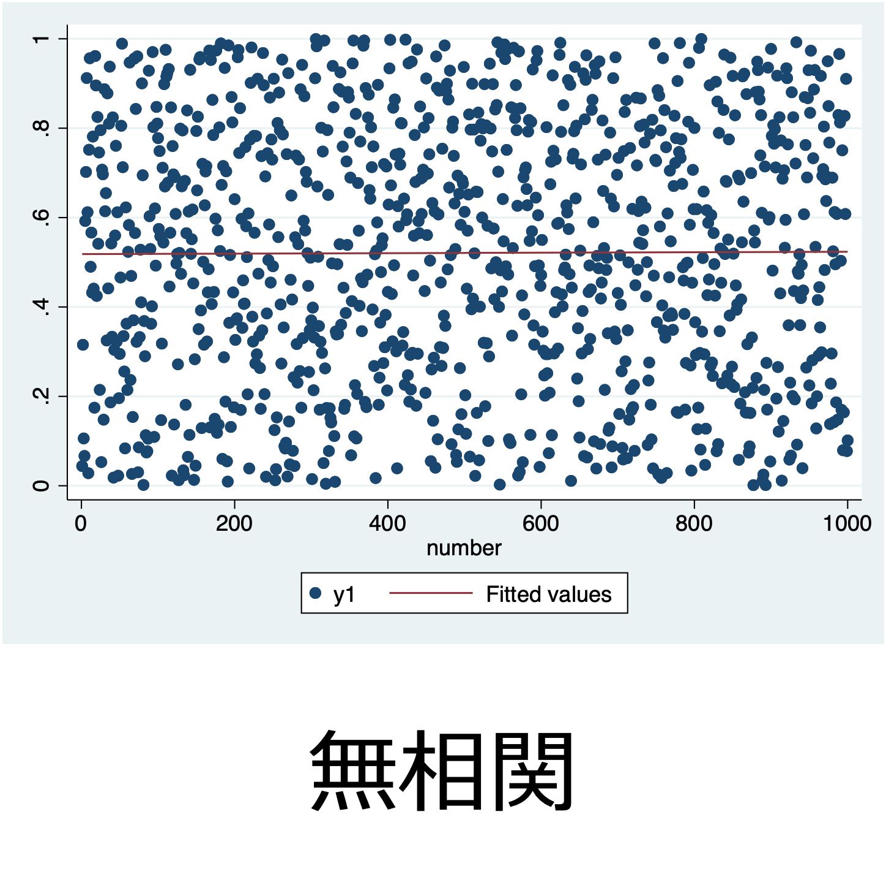
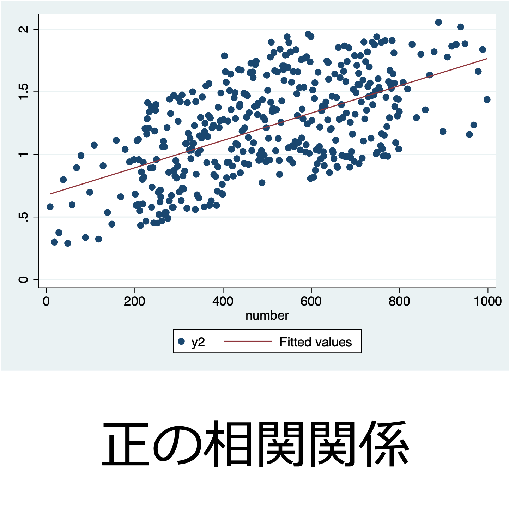
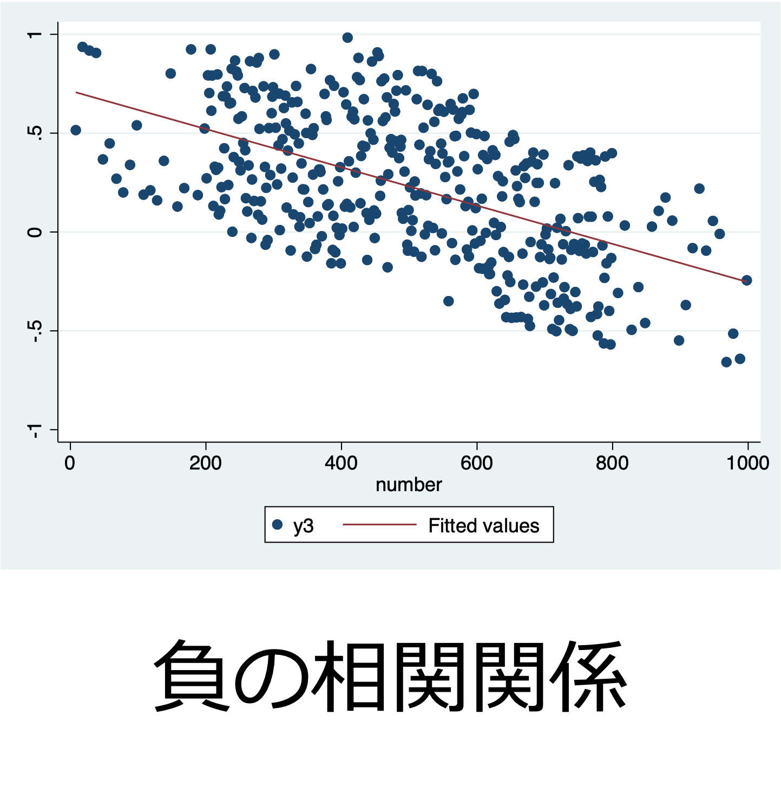
21.9 相関係数（correlation coefficient）
2つの変数の関係の強さを、具体的な数値で表したものです。
\[ r_{xy} = \frac{s_{xy}}{s_x s_y} = \frac{\dfrac{1}{n}\displaystyle\sum_{i=1}^{n}(x_i - \bar{x})(y_i - \bar{y})}{\sqrt{\dfrac{1}{n}\displaystyle\sum_{i=1}^{n}(x_i - \bar{x})^2}\sqrt{\dfrac{1}{n}\displaystyle\sum_{i=1}^{n}(y_i - \bar{y})^2}} = \frac{\displaystyle\sum_{i=1}^{n}(x_i - \bar{x})(y_i - \bar{y})}{\sqrt{\displaystyle\sum_{i=1}^{n}(x_i - \bar{x})^2}\sqrt{\displaystyle\sum_{i=1}^{n}(y_i - \bar{y})^2}} \]
ここで、\(s_{xy}\) は \(x\) と \(y\) の共分散、\(s_x\) は \(x\) の標準偏差、\(s_y\) は \(y\) の標準偏差、\(n\) はデータの個数です。
- \(r_{xy}\) は \(-1\) から \(1\) までのいずれかの値をとります。
- \(|r_{xy}|\) が1に近いほど相関が強く、0に近いほど相関が弱くなります。
- \(r_{xy}\) は単位を持たない値であり、データの単位がどのようなものであっても計算できます。
21.10 共分散
相関係数 \(r_{xy}\) の分子 \(\dfrac{1}{n}\displaystyle\sum_{i=1}^{n}(x_i - \bar{x})(y_i - \bar{y})\) は共分散と呼ばれ、相関係数の符号（プラスかマイナスか）を決めます。
- 平均の点 \((\bar{x}, \bar{y})\) を中心に散布図を4つの領域に分けると、右上と左下の領域の点では \((x_i - \bar{x})(y_i - \bar{y})\) が正に、左上と右下の領域の点では負になります。
- 右上と左下に点が多ければ共分散は正（正の相関）、左上と右下に点が多ければ共分散は負（負の相関）になります。
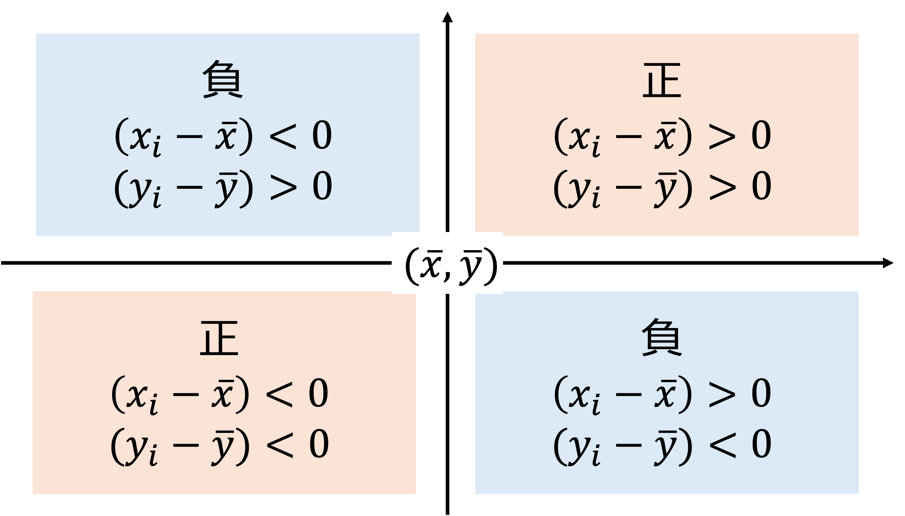
21.11 相関係数の例
赤い線は、\(x\) の平均と \(y\) の平均を表しています。4つの領域のどこに点が多いかによって、相関係数の符号と大きさが決まることを確認してください。
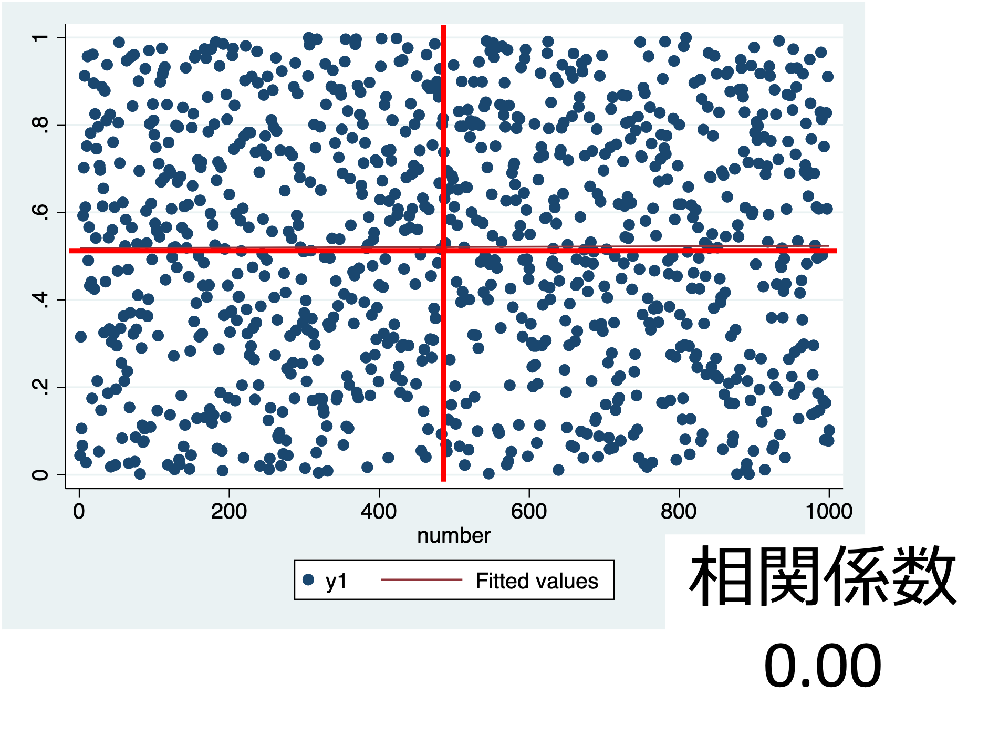
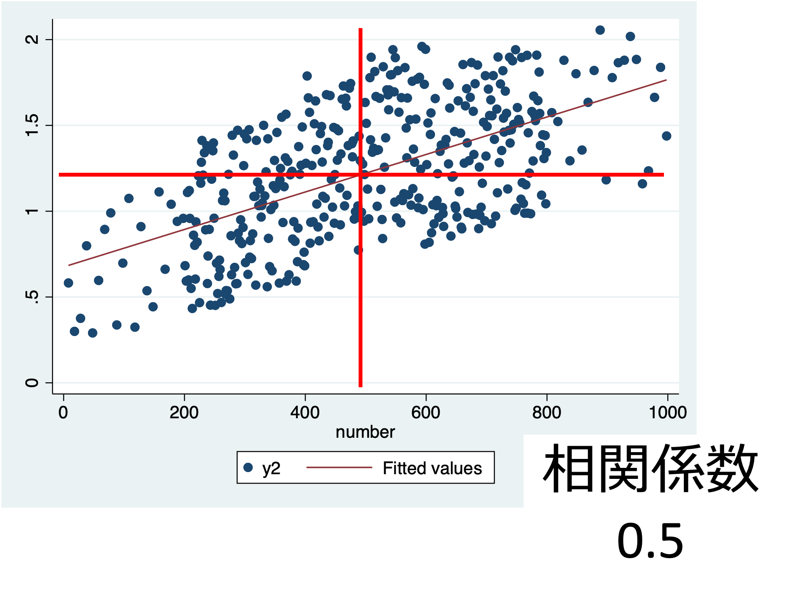
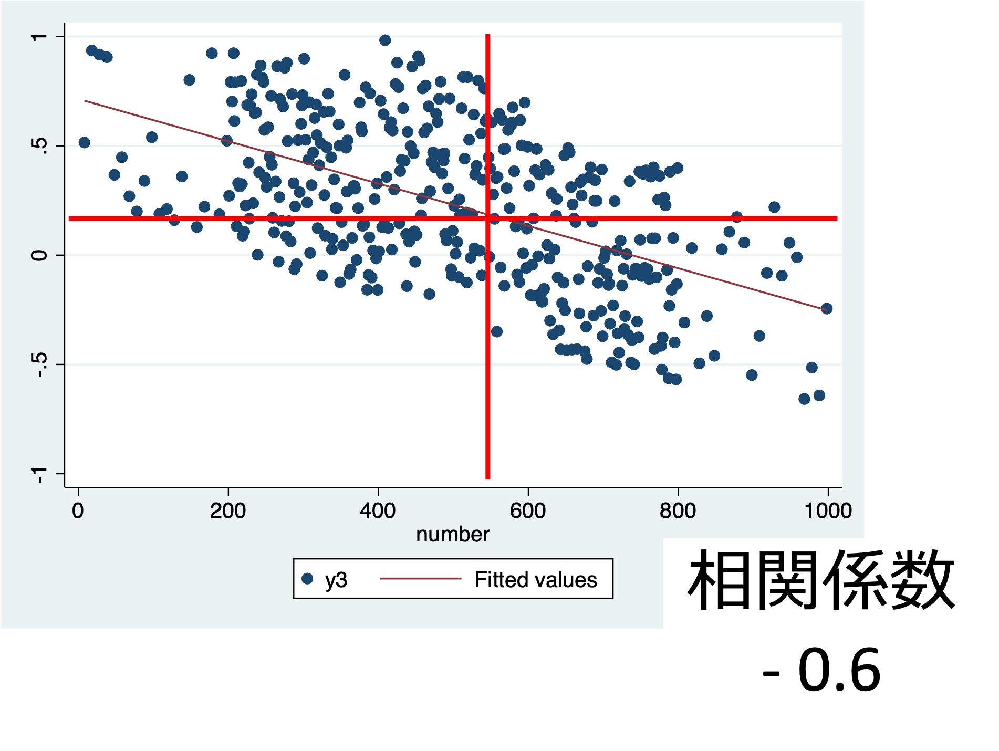
21.12 相関関係の強さ
相関係数の値と相関の強さの目安は、次のとおりです。これはあくまで目安で、分野によって基準は異なります。
| 相関係数の絶対値 \(\lvert r \rvert\) | 相関の強さ |
|---|---|
| 0 〜 0.2 | ほぼなし |
| 0.2 〜 0.4 | 弱い |
| 0.4 〜 0.7 | やや強い |
| 0.7 〜 1 | 強い |
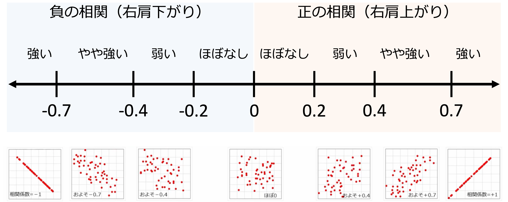
21.13 留意点 1 見せかけの相関（擬似相関）
- アイスの売り上げとビールの売り上げには、正の相関関係があります。しかし、アイスが売れるからビールが売れるわけではありません。
- 実際には、気温（暑さ）が上がると、アイスの売り上げもビールの売り上げも上がります。
- 小学校の数と床屋の数には、正の相関関係があります。しかし、小学校が減るから床屋が減るわけではありません。
- 実際には、人口が減ると、小学校の数も床屋の数も減ります。
このように、2つの変数の両方に影響を与える第3の要因のことを交絡要因と呼びます。相関関係は、必ずしも因果関係を示していません。
21.14 留意点 2 必ず散布図を確認する
相関係数は、外れ値に影響されやすいです。下の図は、ほとんどの点が一直線に並んでいますが、右下の1つの点（外れ値）のために、相関係数が0.42まで小さくなっています。
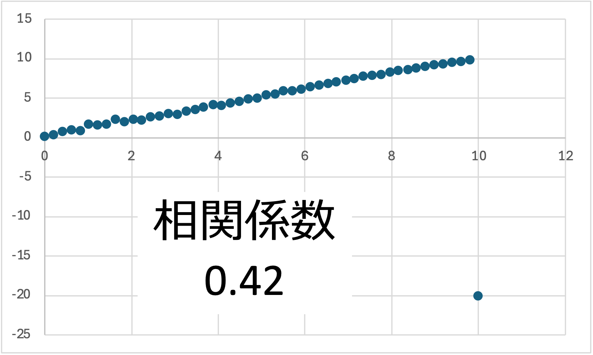
相関係数が示すのは、2つの変数の直線（線形）的な関係の強さです。下の2つの図のように、\(x\) と \(y\) にははっきりとした関係があっても、それが直線的でなければ、相関係数は小さくなります。
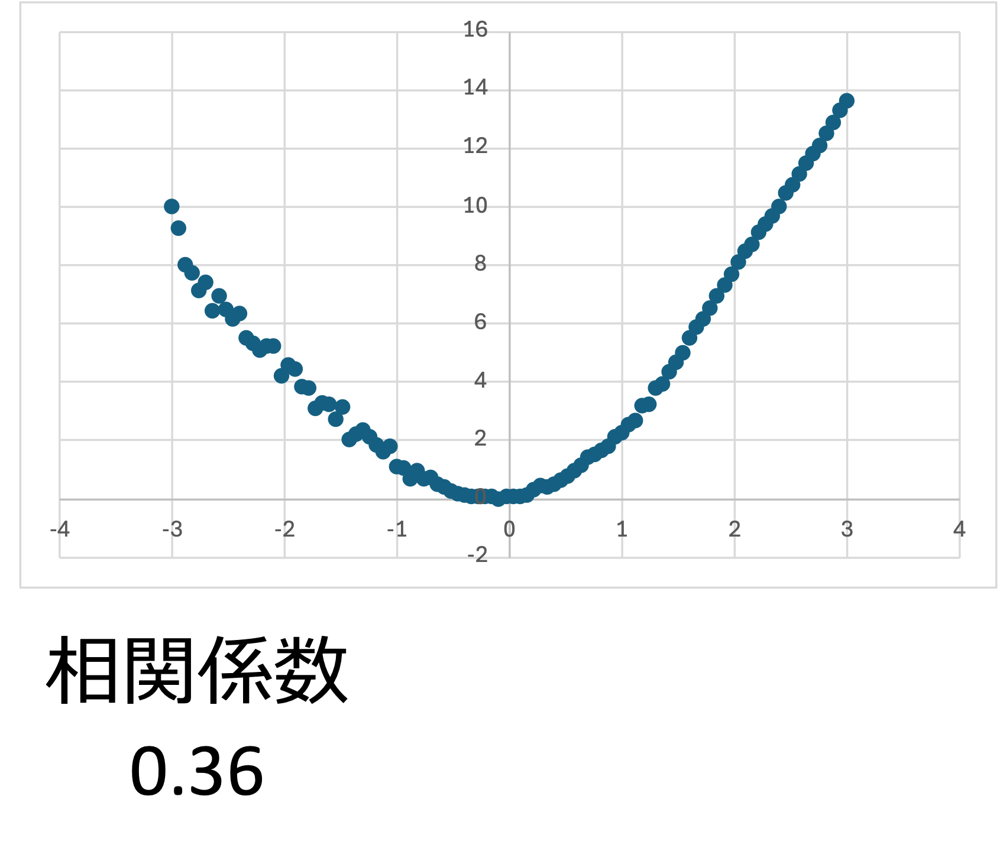
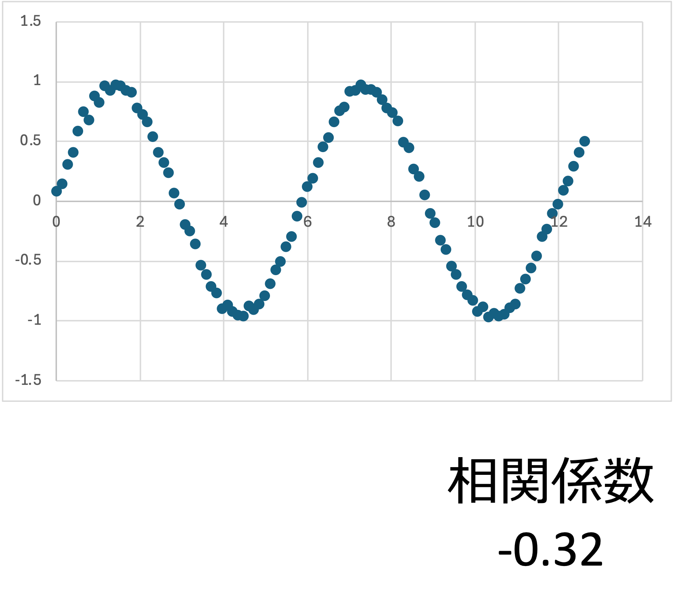
21.15 相関係数の検定
標本から計算した相関係数 \(r\) が0でなくても、母集団では相関がない（母相関係数が0）かもしれません。そこで、母相関係数 \(\rho\)（ロー）が0かどうかを検定します。
手順1：仮説を設定する
- 帰無仮説（\(H_0\)）：母相関係数 \(\rho = 0\)（両変数の間には相関がない・無相関）
- 対立仮説（\(H_1\)）：母相関係数 \(\rho \neq 0\)（両変数の間には相関がある）
手順2：有意水準（臨界値）を決める
有意水準は5%（両側検定）とします。
手順3：検定統計量 \(t\) を求める
\(\rho = 0\) のとき、標本の相関係数 \(r\) から計算した次の統計量は、自由度 \(n - 2\) の \(t\) 分布に従います。
\[ t = \frac{r\sqrt{n - 2}}{\sqrt{1 - r^2}} \]
21.16 相関係数の計算と検定の例
例：10人の勉強時間とテストの点数
| 学生 | 勉強時間（時間） \(x\) | テストの点数 \(y\) |
|---|---|---|
| 1 | 1 | 50 |
| 2 | 2 | 62 |
| 3 | 2 | 45 |
| 4 | 3 | 58 |
| 5 | 4 | 52 |
| 6 | 5 | 70 |
| 7 | 5 | 55 |
| 8 | 6 | 64 |
| 9 | 7 | 60 |
| 10 | 8 | 72 |
| 平均 | 4.3 | 58.8 |
相関係数
- 共分散：\(s_{xy} = 12.26\)
- 勉強時間の標準偏差：\(s_x = 2.193\)
- 点数の標準偏差：\(s_y = 8.171\)
\[ r_{xy} = \frac{s_{xy}}{s_x s_y} = \frac{12.26}{2.193 \times 8.171} = 0.684 \]
相関係数は0.684なので、「やや強い正の相関」があるといえます。
相関係数の検定
手順4：検定統計量と臨界値を比較する 手順5：検定の結論を出す
\[ t = \frac{r\sqrt{n - 2}}{\sqrt{1 - r^2}} = \frac{0.684 \times \sqrt{10 - 2}}{\sqrt{1 - 0.684^2}} = \frac{0.684 \times 2.828}{0.729} = 2.653 \]
- 自由度 \(n - 2 = 8\)、有意水準5%（両側）の臨界値：2.306
- P値（両側）：0.029
- \(t = 2.653\) は臨界値2.306より大きく、P値0.029は有意水準0.05より小さいので、帰無仮説は棄却されます。
- 結論：「勉強時間とテストの点数の間には相関がある（有意水準5%）」となります。
Note相関があっても、因果関係があるとは限らない
この例では、勉強時間とテストの点数に有意な正の相関がありました。しかし、これだけで「勉強時間を増やせば点数が上がる」とはいえません。例えば、もともとその科目が好きな学生ほど、勉強時間も長く、点数も高い、という交絡要因があるかもしれないからです（留意点 1）。
21.17 エクセルでの相関分析
A列（A2〜A11）に勉強時間、B列（B2〜B11）にテストの点数が入力されているとします（1行目は見出しとします）。
関数で計算する
| 求めるもの | エクセルの式 | 結果 |
|---|---|---|
| 相関係数 \(r\) | =CORREL(A2:A11, B2:B11) |
0.684 |
| 共分散 \(s_{xy}\) | =COVARIANCE.P(A2:A11, B2:B11) |
12.26 |
| 勉強時間の標準偏差 \(s_x\) | =STDEV.P(A2:A11) |
2.193 |
| 点数の標準偏差 \(s_y\) | =STDEV.P(B2:B11) |
8.171 |
| 検定統計量 \(t\)（相関係数をD2セルに入れた場合） | =D2*SQRT(10-2)/SQRT(1-D2^2) |
2.653 |
| 臨界値（両側・有意水準5%、自由度8） | =T.INV.2T(0.05, 8) |
2.306 |
| P値（両側） | =T.DIST.2T(ABS(2.653), 8) |
0.029 |
CORREL関数の代わりにPEARSON関数を使っても、同じ値になります。- 相関係数の式は、分子と分母の両方を \(n\) で割っているので、
COVARIANCE.SとSTDEV.S（\(n - 1\) で割るもの）の組み合わせで計算しても、同じ相関係数になります。
分析ツールの「相関」を使う方法
- 「データ」→「データ分析」→「相関」を選びます。
- 「入力範囲」に A1:B11 を指定し、「先頭行をラベルとして使用」にチェックを入れます。
- 出力先を指定して「OK」を押すと、相関係数の表（相関行列）が出力されます。
- 相関行列の対角線上（同じ変数どうし）はすべて1になり、それ以外のところに2つの変数の相関係数（ここでは0.684）が表示されます。
- 3つ以上の変数を選ぶと、すべての組み合わせの相関係数を一度に求められます。
- ただし、分析ツールの「相関」ではP値は出力されないので、相関係数の検定は、上の表のように \(t\) 値とP値を自分で計算します。